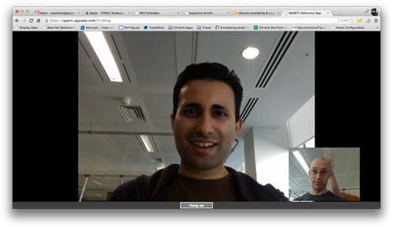
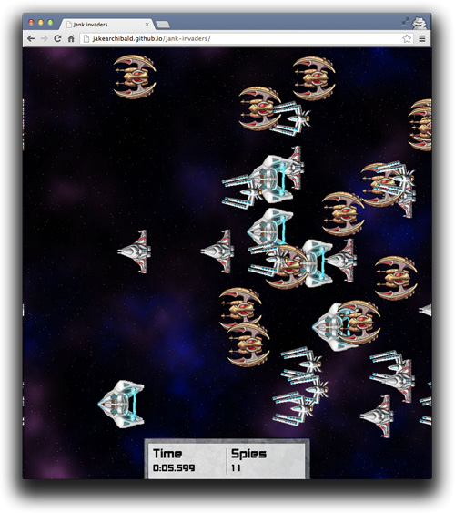

What is WebRTC?
"WebRTC is a free, open project that enables web browsers with Real-Time Communications (RTC) capabilities via simple JavaScript APIs without the use of external native plugins."
It has three main functions:
- Access and acquire video and audio streams
- Establish a connection between peers and stream audio/video.
- Communicate arbitrary data.
Why WebRTC?
Let us take a look at various advantages that WebRTC offers compared to existing technologies:
- Proprietary
- OpenSource
- Plugins
- Built into the browser
- Centralised
- Peer to Peer
- Snooping
- Privacy
- Platform Dependent
- Cross platform
How WebRTC works?
As you may recall, WebRTC has three main functions:
- Access and acquire video and audio streams
- Establish a connection between peers and stream audio/video.
- Communicate arbitrary data.
It has 3 Javascript APIs to perform these 3 functions:
- MediaStream (aka getUserMedia) - Access and acquire video and audio streams
- RTCPeerConnection - Establish a connection between peers and stream audio/video.
- RTCDataChannel - Communicate arbitrary data.
MediaStream
Acquiring audio and video
MediaStream
- Represents a stream of audio and/or video
- Can contain multiple 'tracks'
- Obtain a MediaStream with
navigator.getUserMedia()
MediaStream
aka getUserMedia
var constraints = {video: true};
function successCallback(stream) {
var video = document.querySelector("video");
video.src = window.URL.createObjectURL(stream);
}
function errorCallback(error) {
console.log("navigator.getUserMedia error: ", error);
}
navigator.getUserMedia(constraints, successCallback, errorCallback);
Constraints
- Controls the contents of the MediaStream
- Media type, resolution, frame rate
video: {
mandatory: {
minWidth: 640,
minHeight: 360
},
optional [{
minWidth: 1280,
minHeight: 720
}]
}
getUserMedia + Web Audio
// Success callback when requesting audio input stream
function gotStream(stream) {
var audioContext = new webkitAudioContext();
// Create an AudioNode from the stream
var mediaStreamSource = audioContext.createMediaStreamSource(stream);
// Connect it to the destination or any other node for processing!
mediaStreamSource.connect(audioContext.destination);
}
navigator.webkitGetUserMedia({audio:true}, gotStream);
RTCPeerConnection
Audio and video communication between peers
Communicate Media Streams
→
getUserMedia
+
RTCPeerConnection
←

getUserMedia
+
RTCPeerConnection
←
RTCPeerConnection does a lot
- Signal processing
- Codec handling
- Peer to peer communication
- Security
- Bandwidth management
...
WebRTC architecture

RTCPeerConnection sample
pc = new RTCPeerConnection(null);
pc.onaddstream = gotRemoteStream;
pc.addStream(localStream);
pc.createOffer(gotOffer);
function gotOffer(desc) {
pc.setLocalDescription(desc);
sendOffer(desc);
}
function gotAnswer(desc) {
pc.setRemoteDescription(desc);
}
function gotRemoteStream(e) {
attachMediaStream(remoteVideo, e.stream);
}
RTCDataChannel
Bidirectional communication of arbitrary data between peers
Communicate arbitrary data

onreceivemessage = handle(data);
...
var myData = [
{
id: "ship1";
x: 24,
y: 11,
velocity: 7
},
....
]
send(myData);
→
RTCDataChannel
+
RTCPeerConnection
←
RTCDataChannel
+
RTCPeerConnection
←
onreceivemessage = handle(data);
...
var myData = [
{
id: "ship7";
x: 19,
y: 4,
velocity: 18
},
....
]
send(myData);

RTCDataChannel
- Same API as WebSockets
- Ultra-low latency
- Unreliable or reliable
- Secure
Servers and Protocols
Peer to peer — but we need servers :^\
Abstract Signaling
- Need to exchange 'session description' objects:
- What formats I support, what I want to send
- Network information for peer-to-peer setup
- Can use any messaging mechanism
- Can use any messaging protocol
Signaling Diagram

Servers and Protocols
Peer to peer — but we need servers :^\
Abstract Signaling
- Need to exchange 'session description' objects:
- What formats I support, what I want to send
- Network information for peer-to-peer setup
- Can use any messaging mechanism
- Can use any messaging protocol
Signaling Diagram
STUN and TURN
P2P in the age of firewalls and NATs
An ideal world

The real world

STUN
- Tell me what my public IP address is
- Simple server, cheap to run
- Data flows peer-to-peer
STUN

TURN
- Provide a cloud fallback if peer-to-peer communication fails
- Data is sent through server, uses server bandwidth
- Ensures the call works in almost all environments
TURN

Security
Security throughout WebRTC
- Mandatory encryption for media and data
- Secure UI, explicit opt-in
- Sandboxed, no plugins
Secure pathways
Resources
- webrtc.org
- discuss-webrtc
- @webrtc
- #media on irc.mozilla.org
<Thank You!>
- Slides - www.tarashish.com/webrtc-seminar
- Report - www.tarashish.com/webrtc-seminar/report.pdf